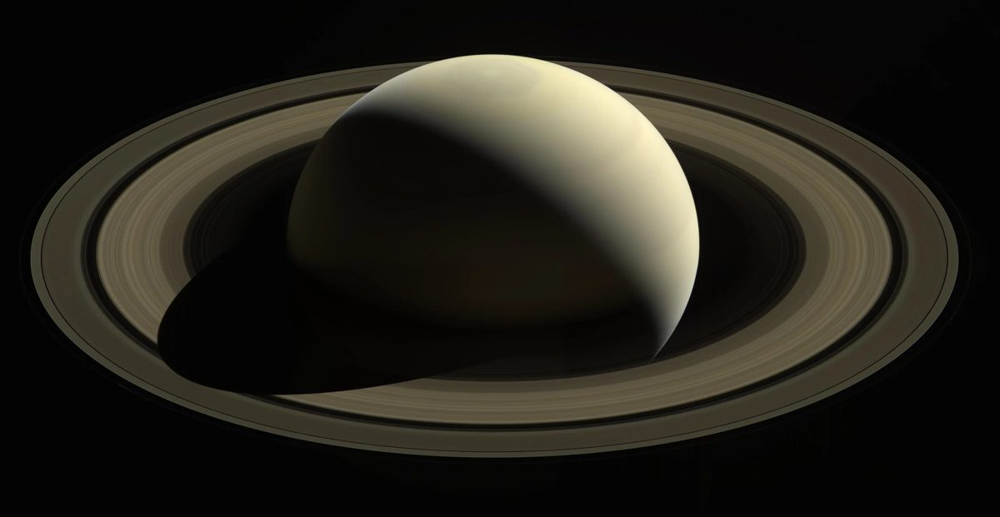
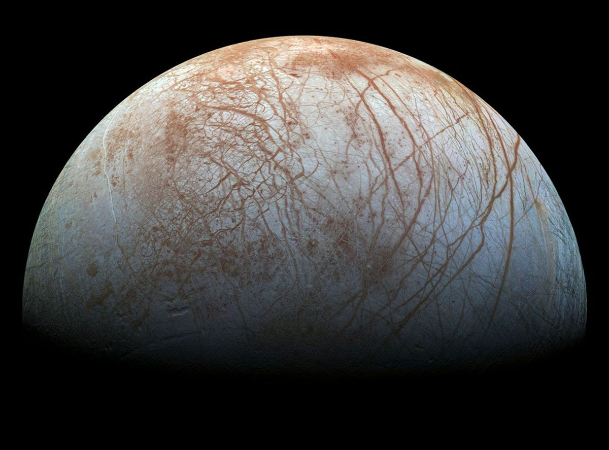
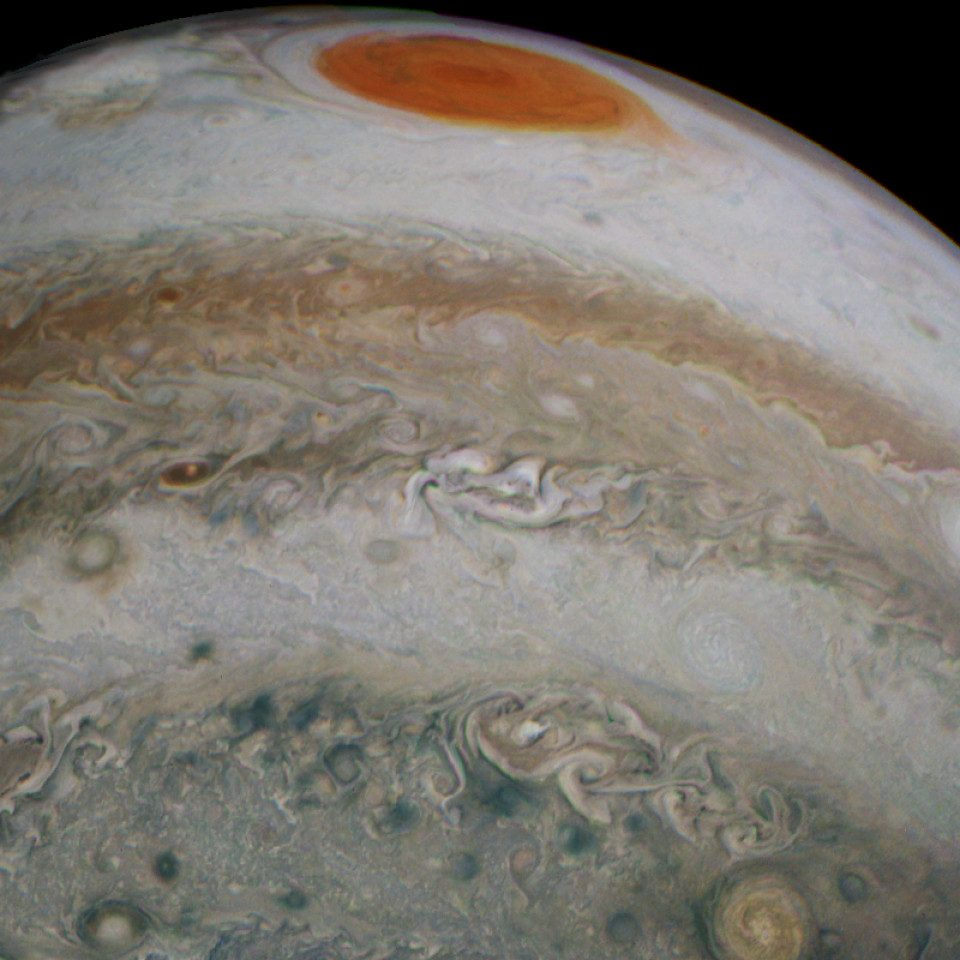
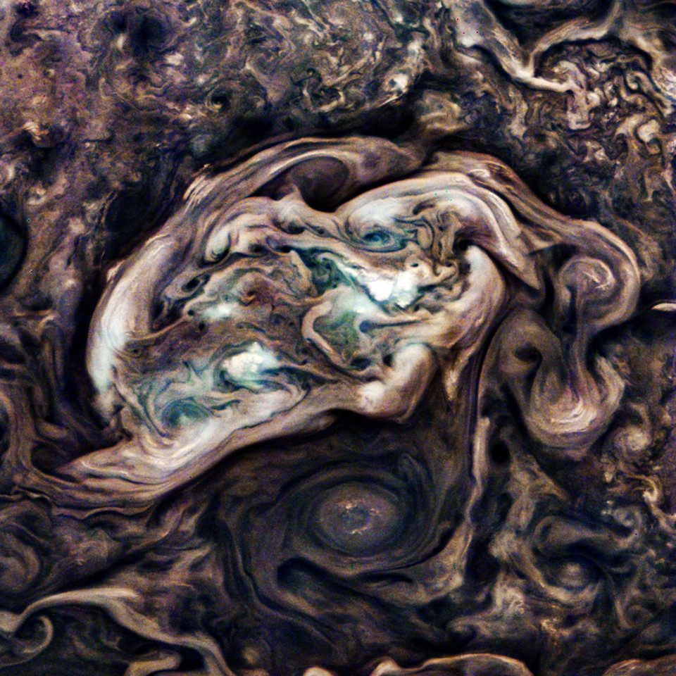

Three presentation decks built from the same body and satellite tables that drive the Sol orrery — the eight planets, twenty-two moons, and the JunoCam images that volunteers develop from raw strips.

0113 slidesThe Sun, the eight planets and the Moon — one card each with radius, mass, gravity, rotation, tilt, temperature, atmosphere and field strength.

0218 slidesTwenty-two moons across five systems: Mars, the Galileans, Saturn's ice moons and Titan, the Uranian five, and Neptune's three.

0311 slidesThe instrument itself: why its images arrive as raw pushframe strips, what eight bits can hold, and the volunteers who process them.

Thirty processed Jupiter frames, filterable by region and treatment, with a zoomable viewer and side-by-side compare.
A single printable sheet on the same subject — print to PDF for one page.
An early iOS prototype: the same bodies and imagery, rebuilt as a phone app you scroll from the Sun out to Neptune. Rough edges are the point — go and have a look.
Every figure in these decks is read from the body and satellite tables in Protonmatter/sol — the solar-cycle engine and orrery. If the decks are the reference, Sol is the live instrument.